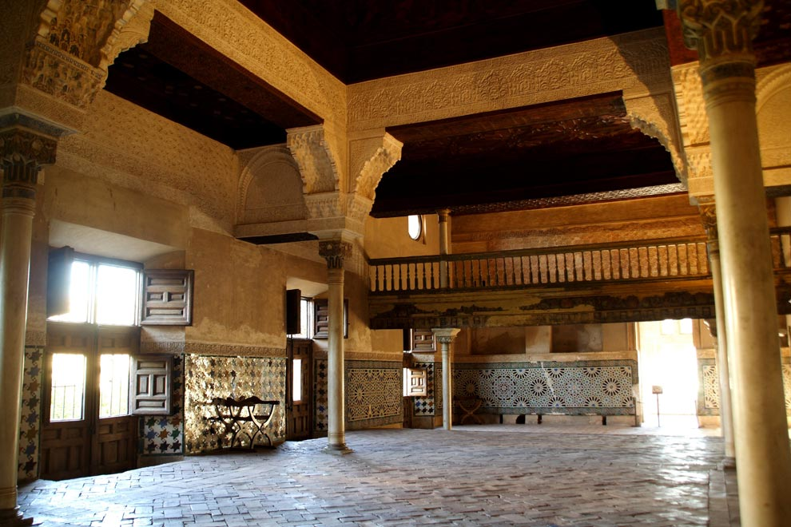

| |
Alhambra. Patrimonio de la Humanidad |
|---|

| |
Alhambra. Patrimonio de la Humanidad |
|---|

Debe su nombre al término árabe Maswar, lugar donde se reunía la Sura o Consejo de Ministros. También era el lugar o la antesala donde el Sultán impartía justicia.
Esta estancia debió pertenecer a una estructura anterior al Palacio de Comares y al de Los Leones, probablemente al construido por Isma’il I (1314-1325) y ha sufrido numerosas transformaciones.
La decoración fue adaptada por Yusuf I (1333-1354) y posteriormente por Muhammad V en su segundo mandato (1362-1391), ambos responsables respectivamente de los dos Palacios de la Alhambra que mejor se han conservado.
Originalmente tenía un cuerpo central de linterna que le servía de iluminación cenital y de la que sólo subsisten las cuatro columnas y sus entablamentos. En el siglo XVI se modifica todo el espacio para añadirle una planta superior y transformarlo en Capilla.
Entre las radicales modificaciones de la sala destaca por su curiosidad la del friso epigráfico de yesería que discurre por encima del zócalo alicatado. Procedente del desaparecido Pórtico del Patio de Machuca se colocó en el Mexuar por artesanos moriscos, en lugar de las típicas almenillas, con una clara intención simbólica: «El Reino es de Dios. La fuerza es de Dios. La Gloria es de Dios». Esta inscripción venía a reemplazar a las jaculatorias cristianas: «Christus regnat. Christus vincit. Christus imperat».